P2
基本概念
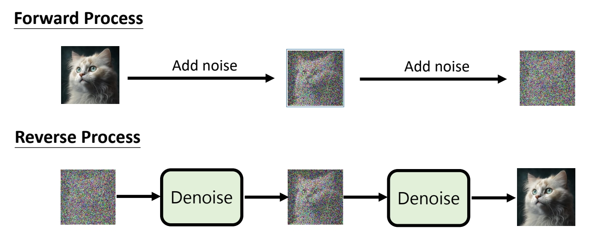
P3
VAE vs. Diffusion Model
P5
Training
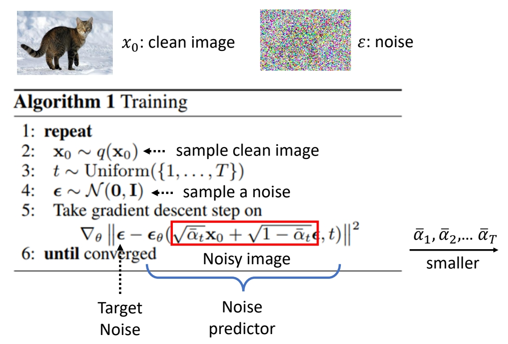
✅ 红框：\(X_o\) 与 noise 做加权平均，权重是预定义好的。得到的是带噪声图像，\(\alpha \) 越来越小，即噪声越来越多。
✅ \(\epsilon_\theta \) 的预测结果应趋近于 \(\epsilon\) 。
P6
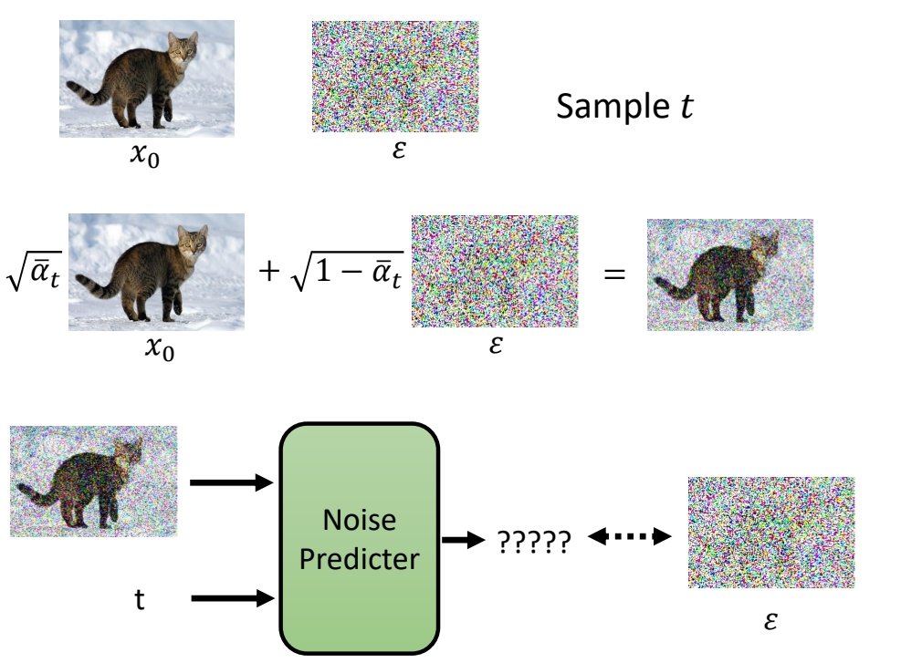
P7
| 想像中… | 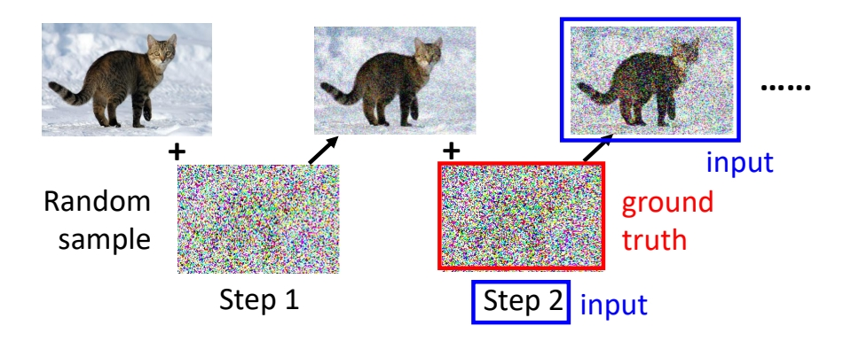 |
| 实际上… | 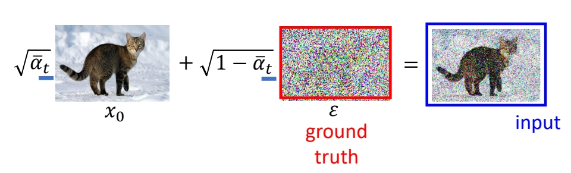 |
✅ 上面过程将加噪过程逐步拆解，是为了帮助理解逐步去噪的过程。但实际上，公式可以证明，逐步加噪和一步加噪在数学上是等价的。
P8
Inference
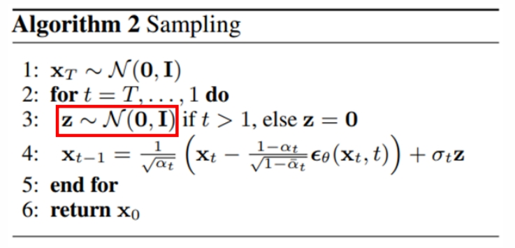

✅ \(X_T\) 是初始噪声，每个 step 还要每次额外生成一个噪声\(Z\).
✅ \(\alpha \) 和 \( \bar{\alpha } \) 是两组数值序列。
✅ 红圈是一个简单的分布，例于标准高斯，通过 NN 的转换，合成一个复杂的分布，期望这个分布与真正的图像分布是一致的。
P10
影像生成模型本质上的共同目标

✅ 实际使用中还会加一个 condition，但整体上没有本质差异，因此后面推导中不考虑 condition.
P11
Maximum Likelihood Estimation

Sample {\(x^1,x^2,\cdots ,x^m\)} from \(P_{data}(x)\)
We can compute \(P_\theta (x^i)\)
\begin{align*} \theta ^\ast =\text{arg } \max_{\theta } \prod_{i=1}^{m} P_\theta (x^i) \end{align*}
✅ \(P_{data}\) 代表真实分布，从分布中 Sample 出来的 \(x\) 即训练集
✅ 目标是让生成数据的分布与真实数据的分布尽量的接近，但是怎样衡量两个分布是否接近？
✅ \(P_\theta (x^i)\) 代表 \(P_\theta\) 生成 \(x^i\) 的概率，但由于 \(P_\theta\) 非常复杂，算不出这个概率，但此处假设 \(P_\theta (x^i)\) 已知。
✅ 实际训练过程中，会使用另一个目标：找出让真实 \(x^i\) 被生成出来的概率最高的\(\theta \).
✅ 可通过数据推导证明，这里提到的两个目标，本质上是一致的。
P12

Maximum Likelihood = Minimize KL Divergence
✅ 结论：让真实数据的概率最大，与让两个分布尽量接近，在数学上是一致的。
✅ VAE、diffusion、flow based 等生成模型，都是以最大化 Likelihood 为目标。GAN 是最小化 JS Divergence 为目标。
P13
Compute \(𝑃_\theta(x)\)
✅ VAE 和 diffusion 非常相似，许多公式是通用的。
技巧一：不推断生成结果，而是推断生成结果分布的均值
 |  |
 |  |
✅ \(G（z）\) 不代表某个生成结果，而是一个高斯的均值，然后计算 \(x\) 在这个分布中的概率。
P14
技巧二：不求\(𝑃_\theta(x)\)，而是求Lower bound of \(log P(x)\)

✅ 通常无法最大化 \(P（x）\)，而是最大化 \(log P(x)\) 的下界。
✅ 以下公式推导中省略参数 \( \theta\)。
P15
DDPM: Compute \(𝑃_\theta(x)\)
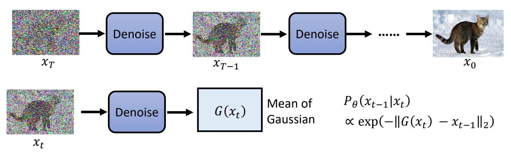
$$
P_ \theta (x_0)=\int\limits _ {x_1:x_T}^{} P(x_T)P_ \theta (x_{T-1}|x_T) \dots P_ \theta (x_ {t-1}|x_t) \dots P_ \theta(x_0|x_1)dx_1:x_T
$$
✅ 对于 diffusion model，每次 denoise 出的是一个高斯分布的均值。
✅ 得出 \(x_0\) 在最终分布中的概率。
❓ 问题，为什么假设\(G(x_t)\) 是高斯分布的 mean？
✅ 答：有人尝试过其它假设，效果没有变好，且高斯分布便于计算。
P16
DDPM: Lower bound of \(log P(x)\)


DDPM的推断过程
计算\(q（x_t｜x_{t-1}）\)
P17

✅ 提前定好一组 \(\beta \)．代表 noise 要加多大。
✅ \(q（x_t｜x_{t-1}）\) 仍然属于高斯分布，其均值为 \(\sqrt{1-\beta _t} \cdot x_t\)，方差为 \(\beta _t\).
计算\(q（x_t｜x_{0}）\)
P18

P19

✅ 由于两次 sample 出的 noise 是独立同分布，两个 noise 以这种形式相加的结果，也符合某个特定的高斯分布。
P20

✅ 结论：\(q（x_t｜x_{0}）\)也符合高斯分布，其均值为\(\bar{\alpha }_t\)，方差为\({1-\bar{\alpha }_t}\).
如何定义损失函数，可以达到最大化\(\log P_{\theta}(x_0)\)的目的
以下是公式推导：
P21

P22
最后简化为以下三项：
\begin{align*} E_{q(x_1|x_0)}[log P(x_0|x_1)]-KL(q(x_T|x_0)||P(x_T)) -\sum_{t=2}^{T}E_{q(x_t|x_0)}[KL(q(x_{t-1}|x_t,x_0)||P(x_{t-1}|x_t))] \end{align*}
✅ 目标是要优化 \( \theta\)，第二项与\( \theta\)无关，可以略掉。
✅ 第三项的 KL Divrgence 涉及到两个分布，分布1是固定的，可以通过计算得到，分布2是由 \( \theta\) 决定的，是要优化的对象。
P23
求 \((q(x_{t-1}|x_t,x_0)\)


✅ 已知 \(q (x_t\mid x_0)\)，\(q (x_{t-1} \mid x_0)\) 和 \(q (x_t \mid x_{t-1})\)，求 \(q (x_{t-1} \mid x_t,x_0)\).
✅ \((q(x_{t-1}|x_t,x_0)\)的数据含义为：已知\(x_0\) 和 \(x_t\)，求 \(x_{t-1}\) 的分布。
P24

P25

https://arxiv.org/pdf/2208.11970.pdf
P26

✅ 结论：\(q(x_{t-1}|x_t,x_0)\) 也是高斯分布，且其均值与方差是与\(\theta\)无关的固定的值。
How to minimize KL divergence?
方式一：直接套公式

✅ 两个高斯分布的 KLD 有公式解，但此处不用公式解，因为 \( \theta\) 只能影响分布2的均值。
方式二

✅ 因此减小 KLD 的方法是让分布2的均值接近分布1的均值。
✅ 分布1的均值可以看作是 \(x_{t-1}\) 的 GT 了。
✅ 其中分布2的均值就是网络输出，分布1的均值见下图

具体的训练方法
P31

✅ 具体的训练方法：
✅（1）取一个数据作为 \(x_0\)。
✅（2）sample 出 \(\varepsilon \)，计算 \(x_t\).
✅（3）根据公式，用 \(x_t\) 来表示 \(x_{t-1}\) 分布的均值
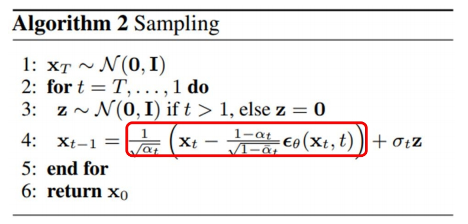
✅（4），发现 \(x\) 与 \(x_{t-1}\) 之间相差一个 noise． 用网络学习这个 noise.
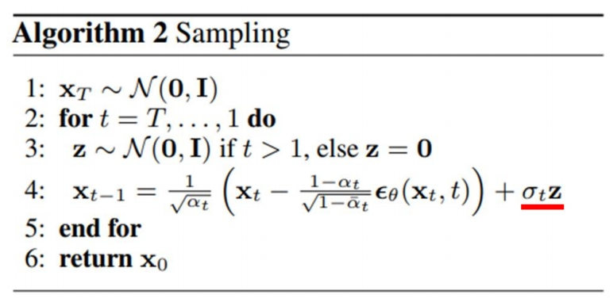
P32
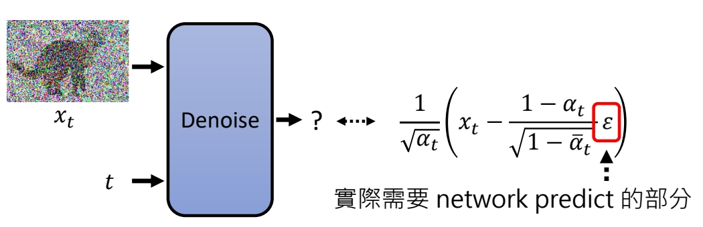
✅ 因为唯一未知的部分就是 \(\varepsilon \).
其它问题
关于\(\alpha \)
✅ \(\alpha \) 是预定义的超参，DDPM 试图学习 \(\alpha \)，发现没有提升。
为什么不直接取 Mean？
❓ 预测出的高斯均值是最大概率的值，为什么不直接取均值？而是要再 sample 一次？
P34
免责声明：以下只是猜测
P35
✅ 很多生成算法都不直接生成结果，而是生成分布再 sample，例如生成文句任务
https://arxiv.org/abs/1904.09751
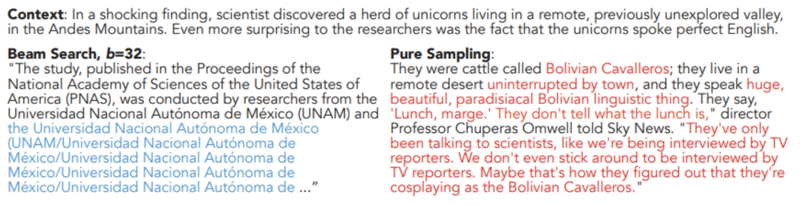
✅ 因为：（1）每次取概率最大的值，会导致生成重复结
P37
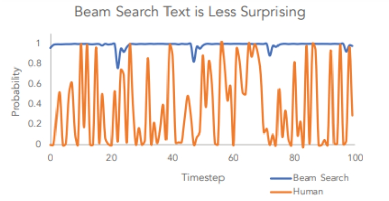
✅ 因为：（2）数据分析发现，人写文章大多数不是选概率最大的词。
P39
Diffusion Model 是一种 Autoregressive
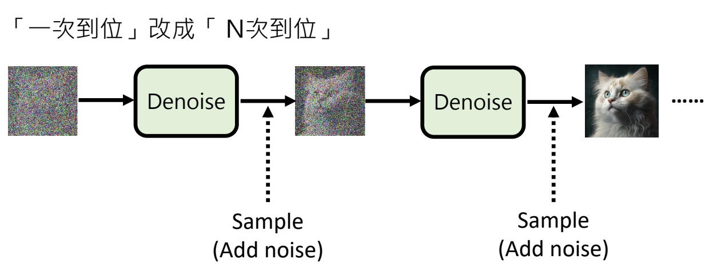
P43
Diffusion Model for Text
Difficulty:文字是离散的，不能直接加 noise．
Solution 1: Noise on latent space
https://arxiv.org/abs/2205.14217
P44
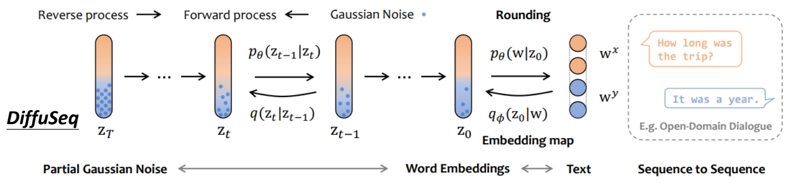
https://arxiv.org/abs/2210.08933
P45
Solution 2: Don’t add Gaussian noise
✅ 不加高斯噪声，而是加 MASK．
https://arxiv.org/abs/2210.16886
Diffusion via Edit based Reconstruction (DiffusER)
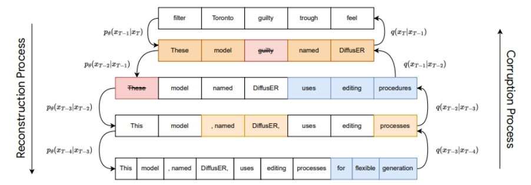
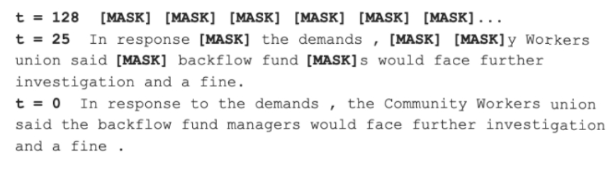
https://arxiv.org/abs/2107.03006
P48
Solution 3: Mask-Predict
https://aclanthology.org/D19-1633/
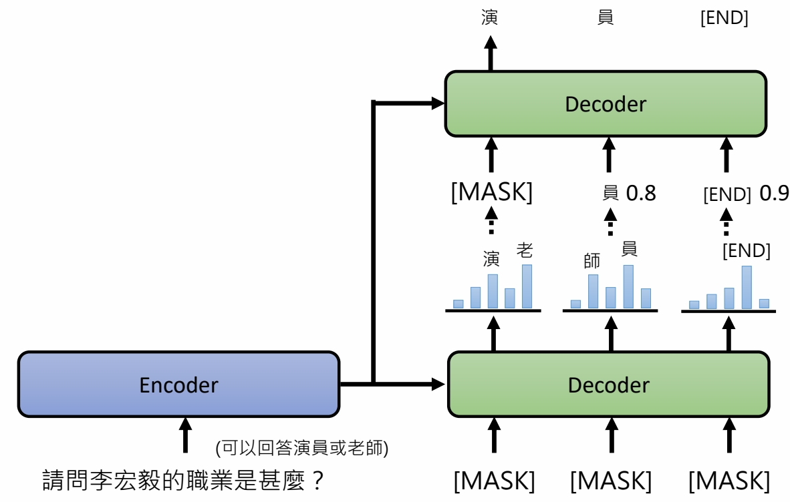
✅ 把几率比较低的部分盖住，再做一次生成。
P49
Mask-Predict
https://arxiv.org/abs/2202.04200
https://arxiv.org/abs/2301.00704
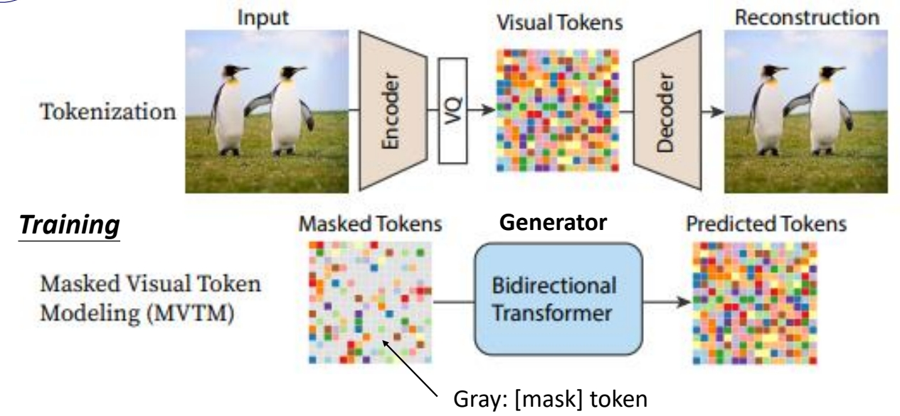
P50
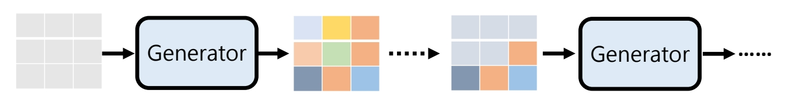
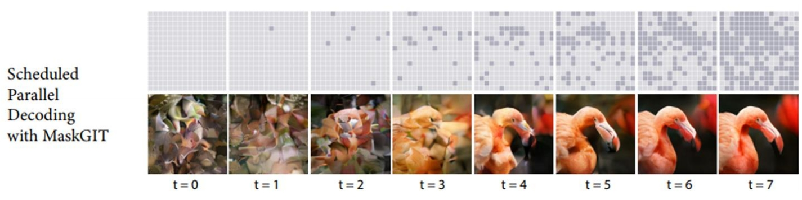
P51
Scheduled Parallel Decoding with MaskGIT
Sequential Decoding with Autoregressive Transformers
本文出自CaterpillarStudyGroup，转载请注明出处。
https://caterpillarstudygroup.github.io/ImportantArticles/